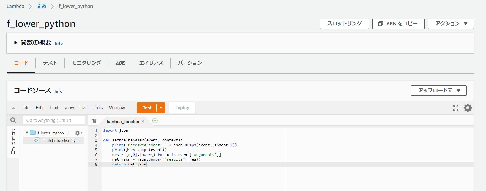

Lamdba側の関数作成
小文字に変換する関数
import json
def lambda_handler(event, context):
print("Received event: " + json.dumps(event, indent=2))
print(json.dumps(event))
res = [x[0].lower() for x in event['arguments']]
ret_json = json.dumps({"results": res})
return ret_json

IAMロールの作成
IAMロールを用意してRedshiftクラスタにアタッチする
Lambda 用に IAM ロールを作成する
{
"Version": "2012-10-17",
"Statement": [
{
"Sid": "Invoke",
"Effect": "Allow",
"Action": [
"lambda:InvokeFunction"
],
"Resource": "arn:aws:lambda:us-west-2:123456789012:function:my-function"
}
]
}
Redshift側でLamdba udfの作成
CREATE OR REPLACE EXTERNAL FUNCTION f_lower_python(varchar)
RETURNS varchar IMMUTABLE
LAMBDA 'f_lower_python'
IAM_ROLE 'arn:aws:iam::xxxxx:role/redshiftlf1';
実行
mydb=# select f_lower_python(a) from test1 limit 10;
f_lower_python
----------------
aaaa
uidus
aaaa
uidus
uidus
aaaa
uidus
aaaa
aaaa
uidus
(10 rows)